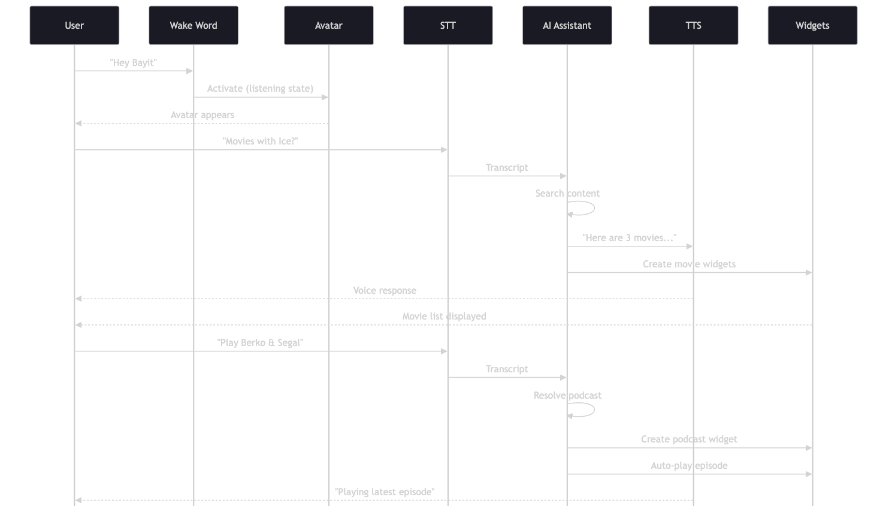
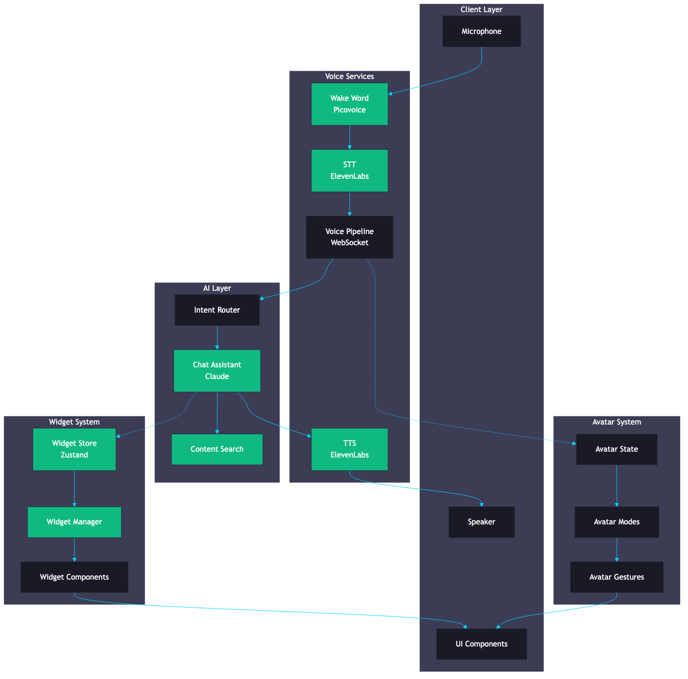
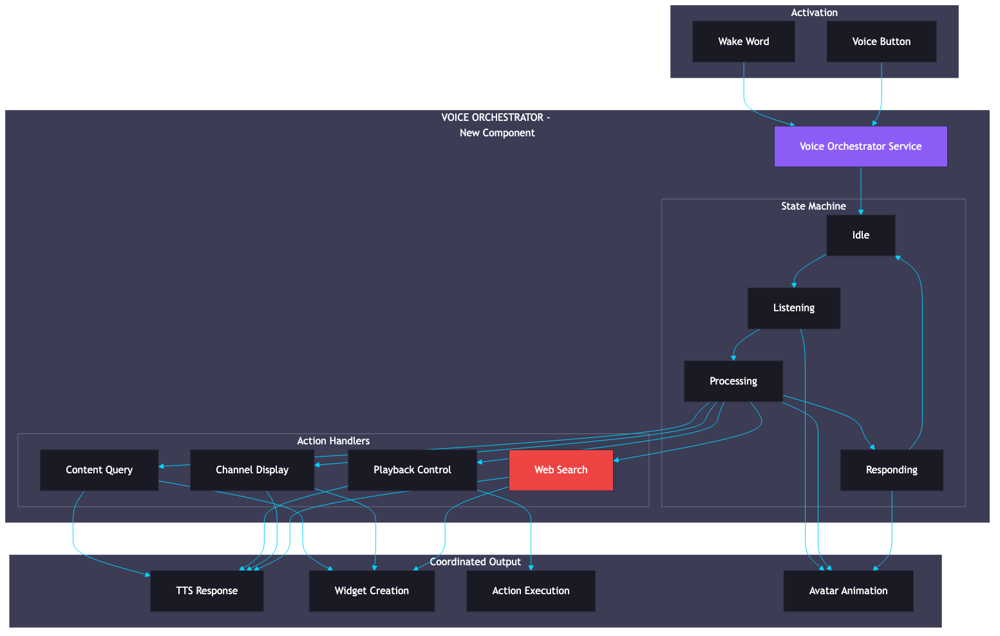
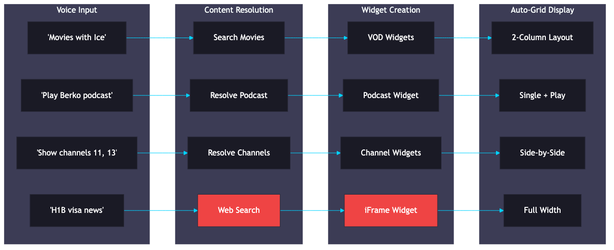
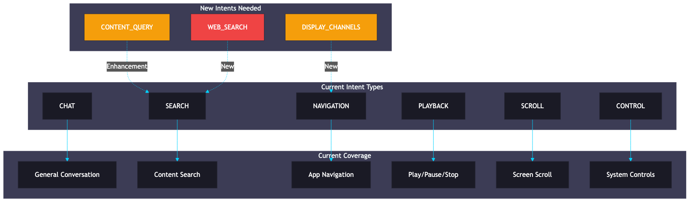
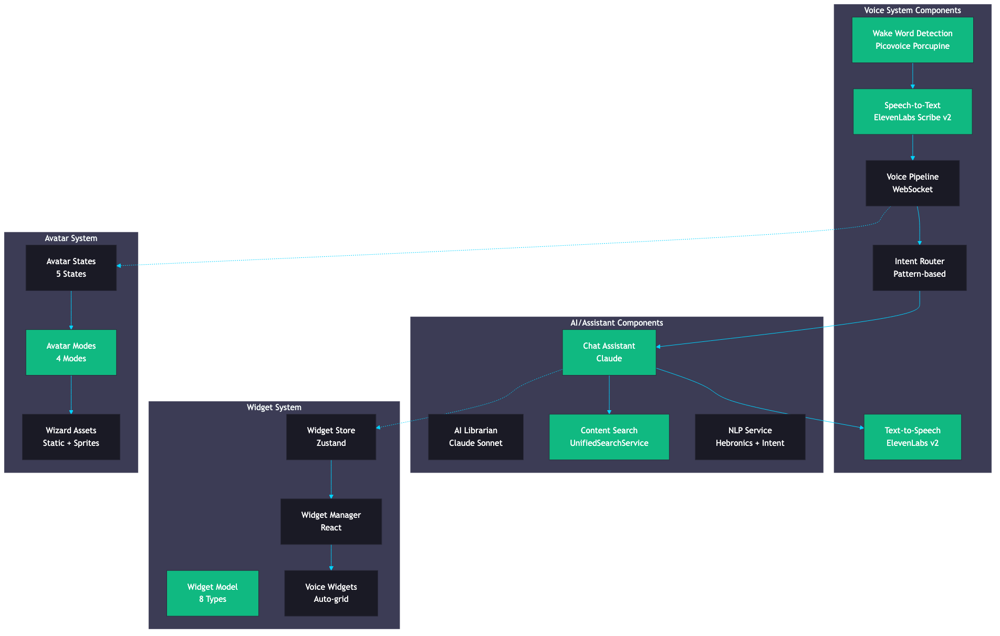
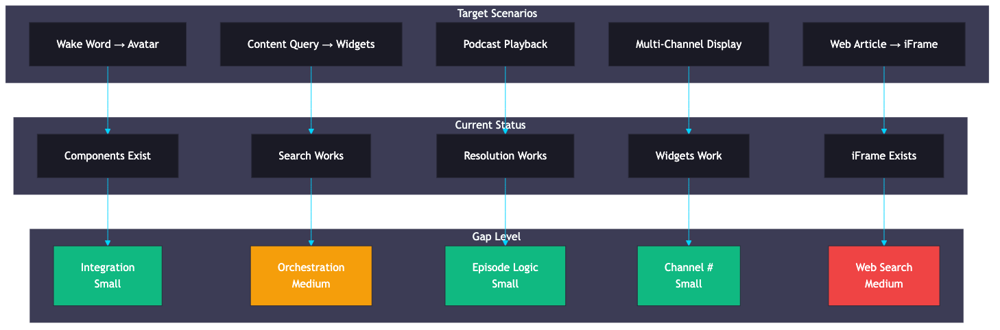

Comprehensive Scan, Cataloging, Classification & Gap Analysis
Bayit+ Streaming Platform | Analysis Date: February 1, 2026
The target user experience for the Voice Assistant interaction:

| User Command | Expected Response | Visual Output |
|---|---|---|
"Do you have any movies with Ice?" |
Avatar speaks: "Sure, here are three movies" | Movie list widgets (Ice Age, etc.) |
"Play last episode from Berko And Segal" |
Avatar speaks: "Playing the latest episode" | Podcast widget + auto-play |
"Show me channels 11 and 13" |
Avatar speaks: "Here are channels 11 and 13" | Two channel widgets displayed |
"Show me latest update on H1B Visas" |
Avatar speaks: "Here's a recent article" | iFrame widget with news article |
| Component | Provider | Status | Location |
|---|---|---|---|
| Wake Word Detection | Picovoice Porcupine | Production | backend/app/api/endpoints/wake_word_proxy.py |
| Speech-to-Text (STT) | ElevenLabs Scribe v2 | Production | backend/app/services/elevenlabs_realtime_service.py |
| Text-to-Speech (TTS) | ElevenLabs v2 | Production | backend/app/services/elevenlabs_tts_streaming_service.py |
| Voice Pipeline | Custom WebSocket | Production | backend/app/services/voice_pipeline_service.py |
| Intent Router | Custom (pattern-based) | Production | backend/app/services/voice/intent_router.py |
| Unified Voice Endpoint | FastAPI | Production | backend/app/api/routes/voice/unified.py |
| Component | Provider | Status | Location |
|---|---|---|---|
| Chat Assistant | Claude (Anthropic) | Production | backend/app/api/routes/chat/ |
| AI Librarian | Claude Sonnet | Production | backend/app/services/ai_agent/ |
| Content Search | UnifiedSearchService | Production | backend/app/services/unified_search_service.py |
| Intent Recognition | Custom NLP | Production | backend/app/services/nlp/ |
| Content Resolution | Fuzzy Matching | Production | backend/app/api/routes/chat/content_resolution.py |






| Target Scenario | Current State | Gap | Effort |
|---|---|---|---|
| Wake word triggers Avatar appearance | Components exist | Integration wiring | Small |
| "Movies with Ice" displays content list | Search works independently | Orchestration layer | Medium |
| Podcast episode playback with widget | Resolution + widgets work | Episode logic + auto-play | Small |
| Multi-channel widget display | Multi-widget works | Channel # resolution | Small |
| Web article in iFrame widget | Widget exists, search missing | Web search integration | Medium |
Wake word detection and Avatar states both exist. Missing: frontend event listener that triggers Avatar visibility and listening state when wake word is detected.
TTS and widget creation work independently. Missing: orchestration layer that generates spoken response while simultaneously creating and displaying widgets with search results.
Podcast resolution works, episodes can be fetched. Missing: LLM interpretation of "last episode" as "latest by date" and auto-play action trigger.
Content resolution uses fuzzy name matching. Missing: "Channel 11" to channel ID mapping (e.g., Kan 11, Hot Channel 11).
iFrame widget type exists with proper sandboxing. Missing: web search API integration, URL extraction from search results, LLM-driven "find article about X" workflow.
| System | Languages | Notes |
|---|---|---|
| Wake Word | 3 (en, he, es) | Picovoice language models |
| STT | 30+ | ElevenLabs multilingual |
| TTS | 30+ | ElevenLabs multilingual v2 |
| Intent Router | 2 (en, he) | Pattern matching |
| UI | 10 | @bayit/shared-i18n |
| Content Type | Searchable | Widget Support | Voice Resolution |
|---|---|---|---|
| Movies | Yes | vod | Yes |
| Series | Yes | vod | Yes |
| Live Channels | Yes | live_channel | Needs channel # |
| Radio | Yes | radio | Yes |
| Podcasts | Yes | podcast | Yes |
| Audiobooks | Yes | audiobook | Yes |
| Web Content | No | iframe | No |
Large Effort
Create a unified Voice Orchestrator that coordinates all voice interaction components:
Responsibilities: Avatar state management, STT to Intent to Action to TTS flow, Widget coordination, Action execution
Medium Effort
Extend intent router with new intent types for target scenarios:
Small Effort
Add channel number resolution and podcast episode logic:
Medium Effort
Add web search capability for iFrame widget creation:
Small Effort
Wire up Avatar appearance and widget coordination:
The Bayit+ platform has robust individual components for voice interaction:
The core issue is lack of unified orchestration:
Create a Voice Orchestrator service that acts as the central coordinator, connecting all existing components into the seamless experience described in the target state.
| Phase 1-2 (Orchestrator + Intent) | Medium |
| Phase 3 (Content Resolution) | Small |
| Phase 4 (Web Search) | Medium |
| Phase 5 (Frontend Integration) | Small |